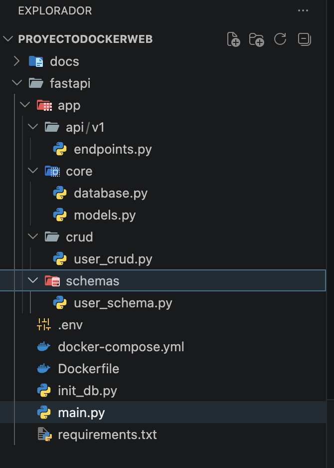

Sobre el proyecto
Este proyecto implementa una aplicación FastAPI con CRUD de usuarios, Docker y despliegue en GitHub Pages.

Características
- API REST con FastAPI
- CRUD de usuarios
- Docker y Docker Compose
- Despliegue en GitHub Pages
- Optimización SEO y analítica